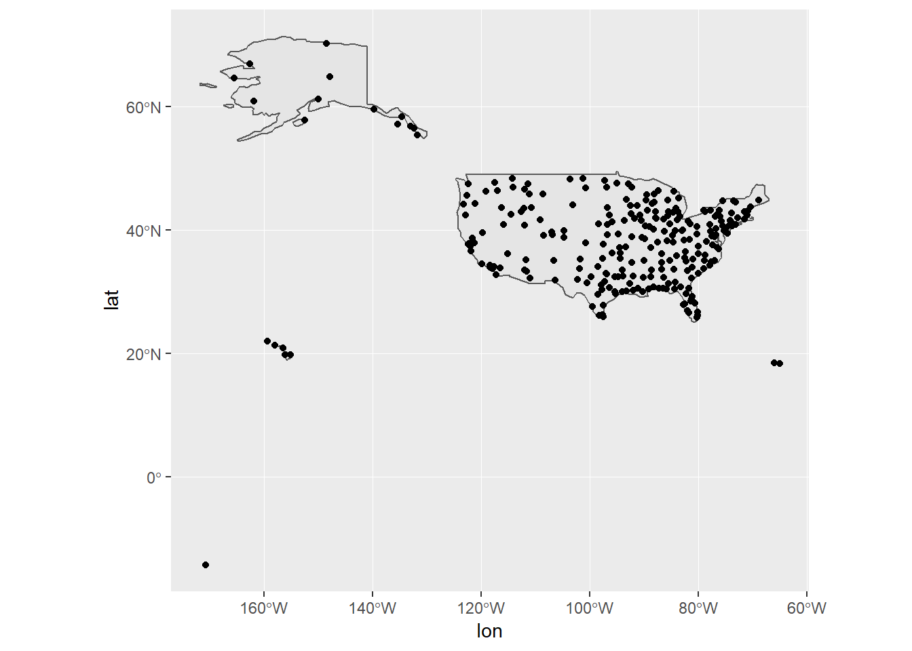
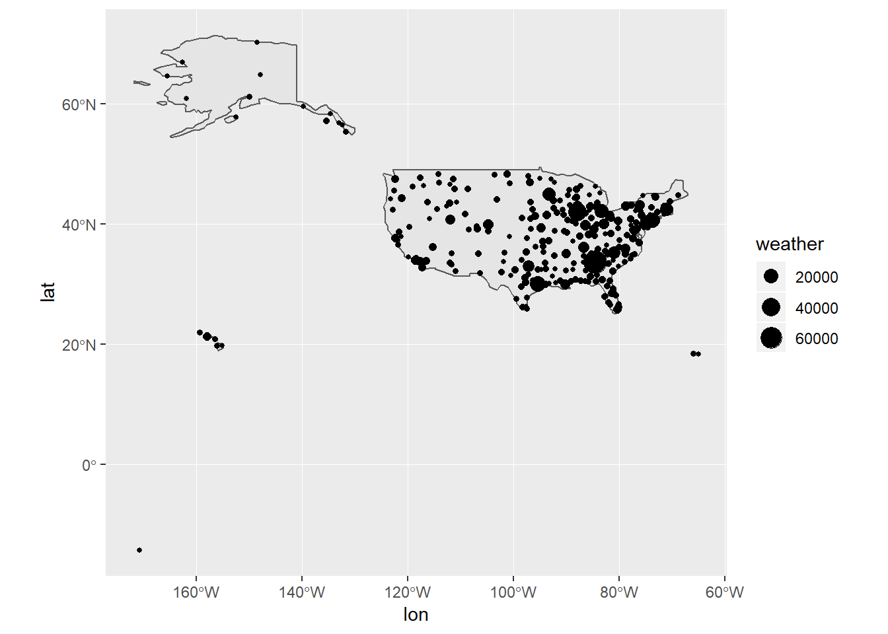
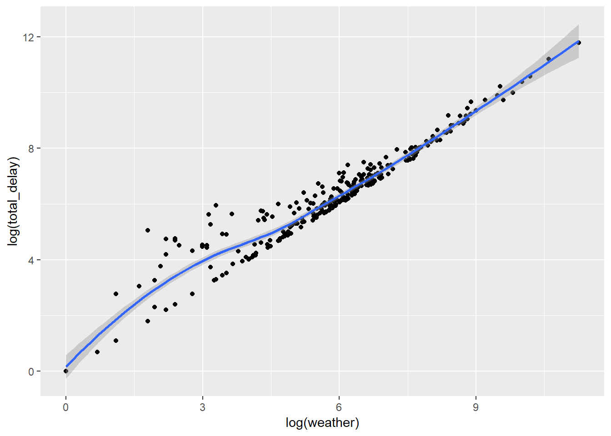
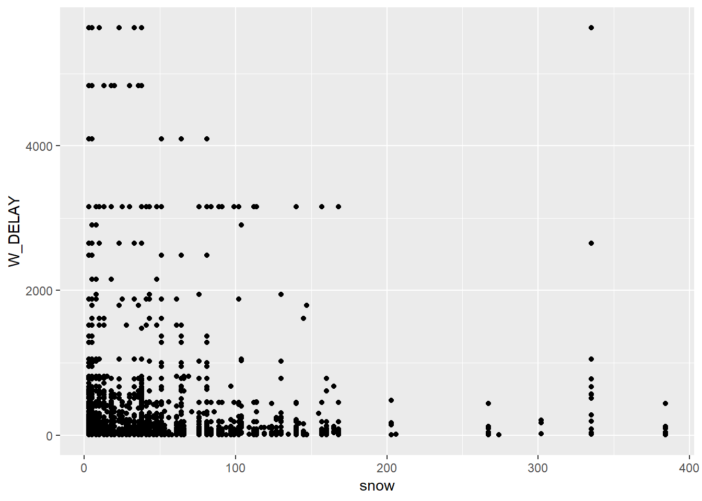
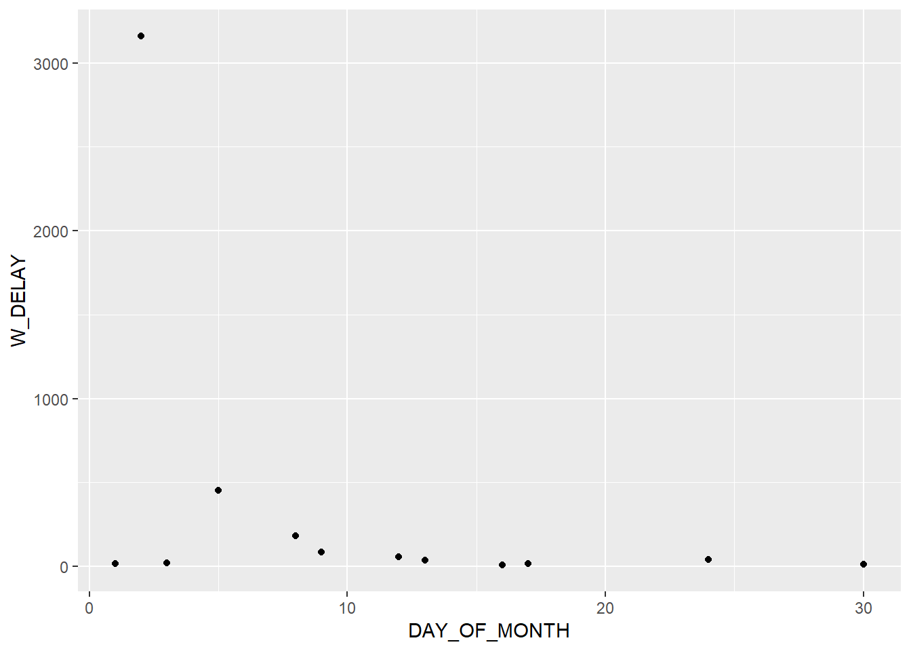
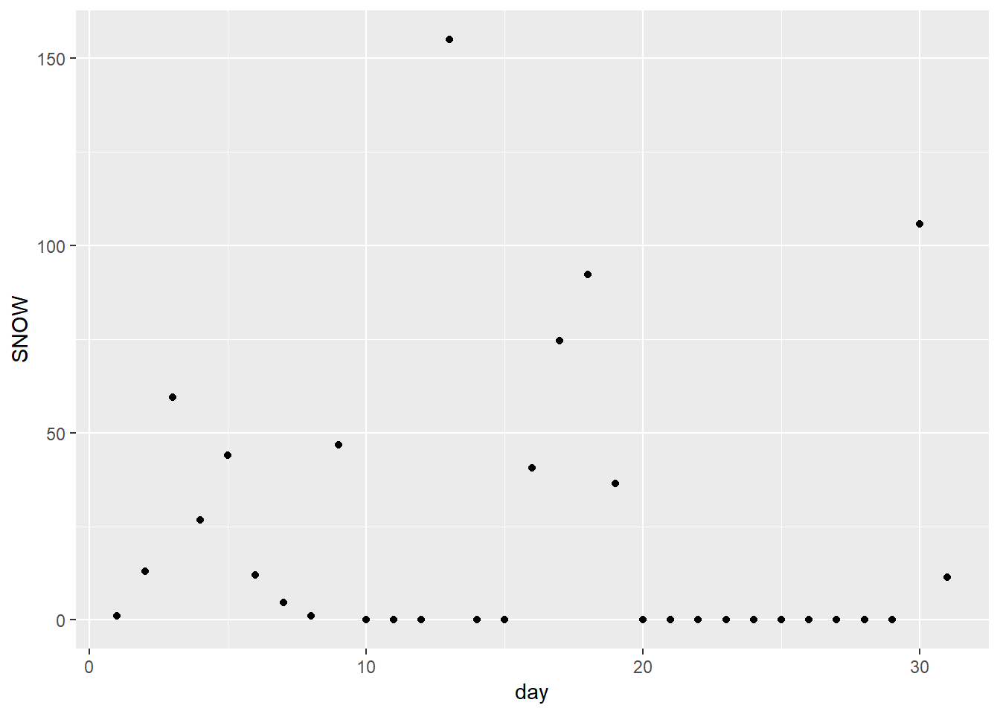
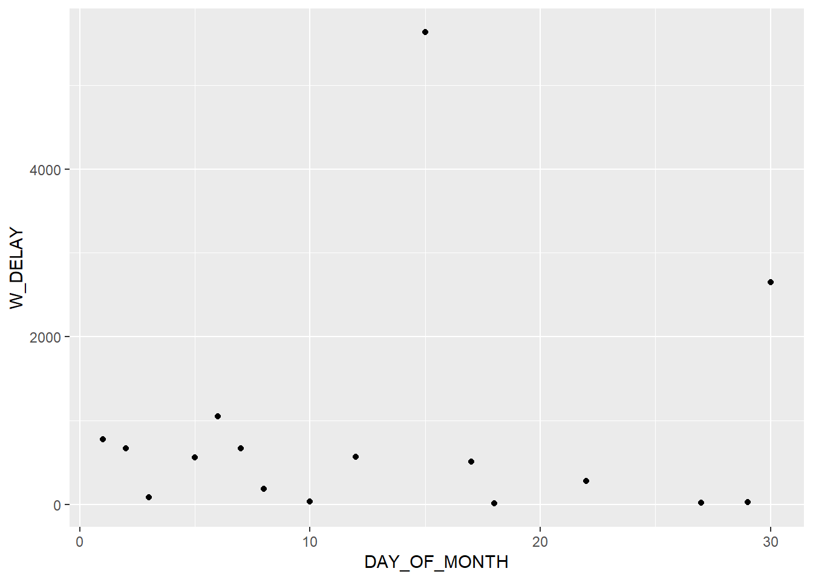
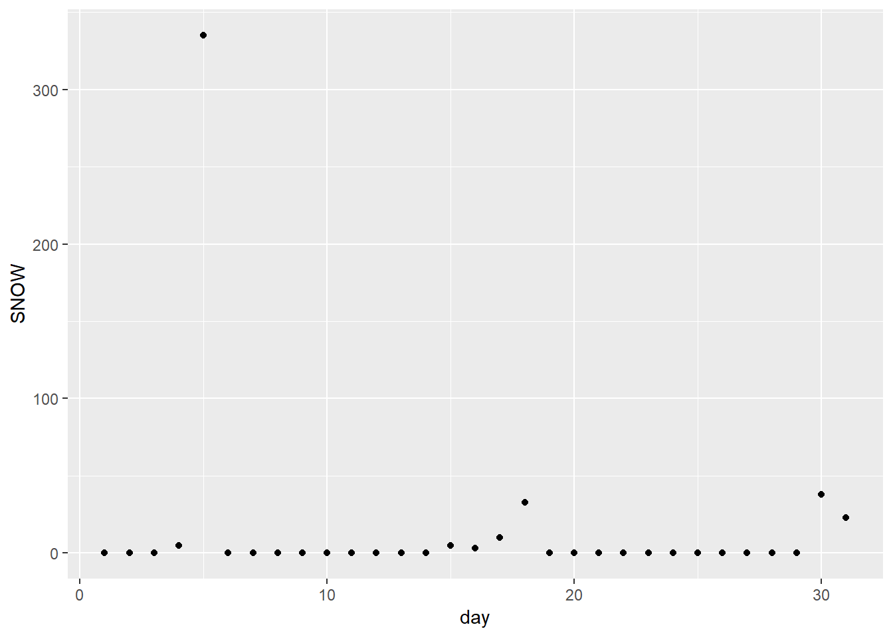
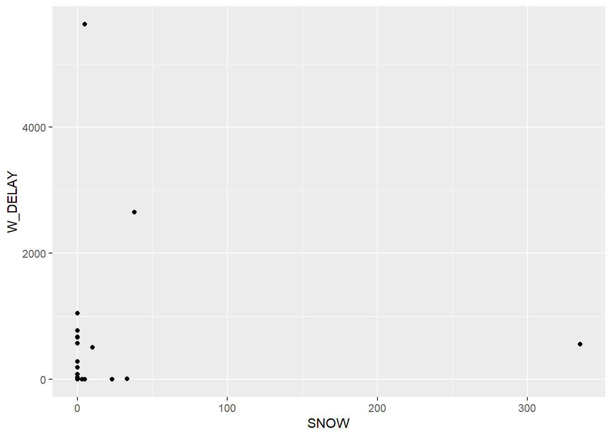

Air travel is increasingly popular in not only the United States but also other parts of the world. However, flight delay are getting more and more normal especially for large airports. In the northern part of the US, snow is often one of the factor resulting in flight delay in winter and it is especially annoying. This project aims to analyse the vulnerability of airport delays to snowfall across different region in the US.
library(tidyverse)
library(ggmap)
library(ggplot2)
library(dplyr)
library(spData)
library(sf)
library(rgdal)
library(rnoaa)
data(world)
albers <- "+proj=aea +lat_1=29.5 +lat_2=45.5 +lat_0=37.5 +lon_0=-96 +x_0=0 +y_0=0 +ellps=GRS80 +datum=NAD83 +units=m +no_defs"
US.sf <- world %>% dplyr::filter(iso_a2 == "US")
US.sf.albers <- US.sf %>% st_transform(albers)
OTP <- read.csv("data/OnTimeP.csv")
APdata <- read.csv("data/AirportData.csv")
OTP.clean <- OTP %>% dplyr::filter(DEP_DELAY_NEW >= 1) %>% dplyr::filter(WEATHER_DELAY >= 1) %>%
dplyr::select(YEAR, MONTH, DAY_OF_MONTH, ORIGIN, ORIGIN_STATE_ABR, DEP_DELAY_NEW, WEATHER_DELAY)
OTP.sum <- OTP.clean %>% dplyr::select(ORIGIN, DEP_DELAY_NEW, WEATHER_DELAY) %>%
group_by(ORIGIN) %>% summarize(total_delay = sum(DEP_DELAY_NEW), weather = sum(WEATHER_DELAY))
OTP.sum$ORIGIN <- sapply(OTP.sum$ORIGIN, as.character)
Airports <- APdata %>% select(AIRPORT, DISPLAY_AIRPORT_NAME, DISPLAY_AIRPORT_CITY_NAME_FULL, AIRPORT_COUNTRY_CODE_ISO, AIRPORT_STATE_CODE, LATITUDE, LONGITUDE)
A <- Airports %>% group_by(AIRPORT) %>% summarize(lat = mean(LATITUDE), lon = mean(LONGITUDE)) %>%
dplyr::filter(lat != "NA") %>% dplyr::filter(lon != "NA")
A$AIRPORT <- sapply(A$AIRPORT, as.character)
Airport.sf <- st_as_sf(A, coords = c("lon", "lat"), crs = 4326)
A_O.inner <- left_join(OTP.sum, A, by = c("ORIGIN" = "AIRPORT"))
A_O.inner.sf <- st_as_sf(A_O.inner, coords = c("lon", "lat"), crs = 4326)st.snow.st.us.inx.2 <- read.csv("data/st_snow_st_us_inx_2.csv")
st.snow.st.us.inx.2 <- st_as_sf(st.snow.st.us.inx.2, coords = c("xcoord", "ycoord"), crs = albers) %>% select(-X)weather2 <- meteo_pull_monitors(monitors = st.snow.st.us.inx.2$id, date_min = "2018-01-01", date_max = "2018-01-31", var = "SNOW")
weather <- weather2 %>% spread(date, snow, fill = 0)
Airport.weather <- left_join(weather, st.snow.st.us.inx.2, by = c("id" = "id"))## Warning: Column `id` joining character vector and factor, coercing into
## character vectorAirport.weather2 <- left_join(weather2, st.snow.st.us.inx.2, by = c("id" = "id"))## Warning: Column `id` joining character vector and factor, coercing into
## character vectorOTP.weather <- OTP.clean %>% select(YEAR, MONTH, DAY_OF_MONTH, ORIGIN, WEATHER_DELAY) %>% dplyr::group_by_(.dots = c("DAY_OF_MONTH", "ORIGIN")) %>% summarise(W_DELAY = sum(WEATHER_DELAY))
OTP.weather.spread <- OTP.weather %>% spread(DAY_OF_MONTH, W_DELAY, fill = 0)
Airport.weather3 <- left_join(OTP.weather, Airport.weather2, by = c("ORIGIN" = "ORIGIN")) %>% dplyr::filter(snow != 0)## Warning: Column `ORIGIN` joining factors with different levels, coercing to
## character vectorp1 <- ggplot(US.sf) + geom_sf(aes(geometry = geom)) + geom_point(data = A_O.inner, aes(x = lon, y = lat))
p1
p2 <- ggplot(US.sf) + geom_sf(aes(geometry = geom)) + geom_point(data = A_O.inner, aes(x = lon, y = lat, size = weather))
p2
This plot was done with different size of dot showing amount of each airport delay in minutes. We can see that in the Northeastern part of the United States, weather delay is way more significant than anywhere in the country.
p3 <- ggplot(A_O.inner) + geom_point(aes(x = log(weather), y = log(total_delay))) + geom_smooth(method = loess, aes(x = log(weather), y = log(total_delay)))
p3
p4 <- ggplot(data = Airport.weather3) + geom_point(aes(x = snow, y = W_DELAY))
p4
BUF <- OTP.weather %>% dplyr::filter(ORIGIN == "BUF") %>% arrange(DAY_OF_MONTH)
p.BUF.1 <- ggplot(data = BUF) + geom_point(aes(x = DAY_OF_MONTH, y = W_DELAY))
p.BUF.1
BUF.weather <- weather2 %>% left_join(st.snow.st.us.inx.2, by = "id") %>% dplyr::filter(ORIGIN == "BUF") %>% na.omit() %>% separate(date, c("year", "month", "day"), sep = "-", convert = TRUE) %>% group_by(day) %>% summarise(SNOW = mean(snow))## Warning: Column `id` joining character vector and factor, coercing into
## character vectorp.BUF.2 <- ggplot(data = BUF.weather) + geom_point(aes(x = day, y = SNOW))
p.BUF.2
BUF.join <- left_join(BUF.weather, BUF, by = c("day" = "DAY_OF_MONTH")) %>% select(-ORIGIN)
BUF.join$W_DELAY <- BUF.join$W_DELAY %>% replace_na(0)
p.BUF <- ggplot(data = BUF.join) + geom_point(aes(x = SNOW, y = W_DELAY))BOS <- OTP.weather %>% dplyr::filter(ORIGIN == "BOS") %>% arrange(DAY_OF_MONTH)
p.BOS.1 <- ggplot(data = BOS) + geom_point(aes(x = DAY_OF_MONTH, y = W_DELAY))
p.BOS.1
BOS.weather <- weather2 %>% left_join(st.snow.st.us.inx.2, by = "id") %>% dplyr::filter(ORIGIN == "BOS") %>% na.omit() %>% separate(date, c("year", "month", "day"), sep = "-", convert = TRUE) %>% group_by(day) %>% summarise(SNOW = mean(snow))## Warning: Column `id` joining character vector and factor, coercing into
## character vectorp.BOS.2 <- ggplot(data = BOS.weather) + geom_point(aes(x = day, y = SNOW))
p.BOS.2
BOS.join <- left_join(BOS.weather, BOS, by = c("day" = "DAY_OF_MONTH")) %>% select(-ORIGIN)
BOS.join$W_DELAY <- BOS.join$W_DELAY %>% replace_na(0)
p.BOS <- ggplot(data = BOS.join) + geom_point(aes(x = SNOW, y = W_DELAY))
p.BOS
From the few scattered plot of weather delay vs snow at two airports, Buffalo, NY and Boston, MA, it does not look like that the weather delay has a potential statistical relation with snow fall. Looking into the metadata of the On Time Performance on the US Bureau of Transportation Statistics, the column of weather delay includes all flights that were delayed by weather, not only limited to the ones that were influenced by weather condition at the origin airport. Future works could be done as putting the first two maps in a leaflet interactive map, as well as looking into more ways to address the “weather-not-on-site” problem.